scenes/hero-garden
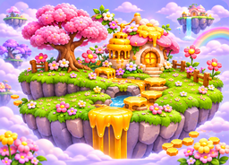
Wide Honeydrop Gardens environment scene: floating flower meadow with pink blossom tree, cream flower-roof cottage with golden honey trim, honey fountain, stream, honey stepping stones, wooden fence, distant floating islands and pastel clouds. Omit all foreground creatures (rabbit, purple character and bee); this is a clean environment plate for placing existing locked characters separately.
flower-cottages/front-left
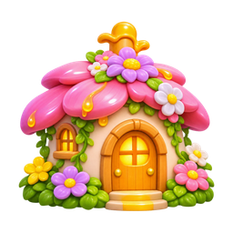
Cream fairy cottage with broad pink petal roof, yellow honey center, leafy flower garlands, warm glowing arched door and honey chimney; front-left view
flower-cottages/front-right
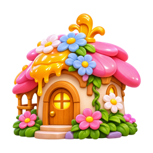
Same pink petal-roof cream fairy cottage with blue and white daisies, warm wooden door, flowers and honey trim; front-right view
flower-cottages/side
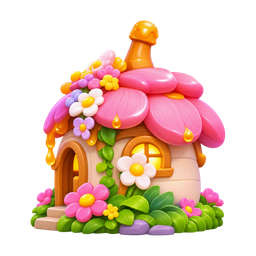
Pink petal-roof cream cottage side view with small glowing window, flower garden and narrow honey chimney
flower-cottages/back
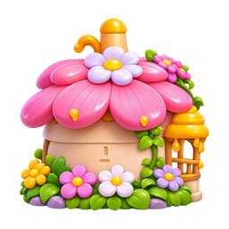
Back of round cream cottage, layered pink flower-petal roof, tiny chimney, daisies and green vines
flower-cottages/rear-three-quarter
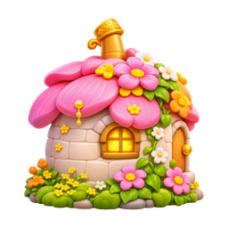
Rear three-quarter view of pink petal-roof cottage with glowing small window and trailing flowers
flower-cottages/overhead
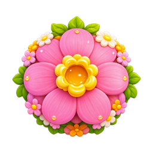
Overhead view of large round pink flower roof, honey-gold central cup, green leaf and daisy trim
honey-huts/front
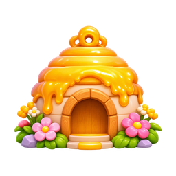
Round cream honey hut with tiered domed glossy golden honey roof, dripping honey eaves, arched wooden door, flowers at base; front view
honey-huts/three-quarter
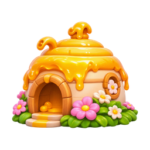
Honey-roof round cream hut three-quarter view with open recessed doorway, dripping golden honey and flower bed
honey-huts/side
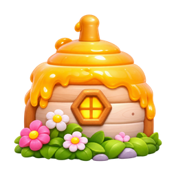
Honey-roof round hut side view with small hexagon glowing window and pink white flowers
honey-huts/back
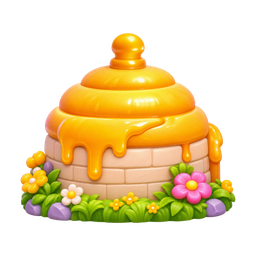
Rear view of round honey hut with cream brick wall and dripping tiered gold roof, flowers at base
honey-huts/rear-three-quarter
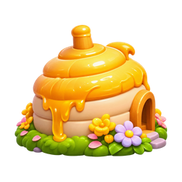
Rear three-quarter view of small cream honey hut with gold tiered roof and flower border
honey-huts/overhead
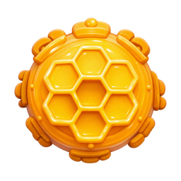
Overhead gold honeycomb hexagonal roof of honey hut, raised honeycomb cells and glossy honey rim
blossom-trees/view-01
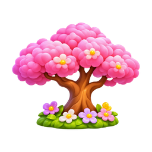
Pink cotton-candy blossom tree with warm branching trunk, tiny pale flowers in fluffy pink canopy, flowered grassy root patch, match pictured angle 1
blossom-trees/view-02
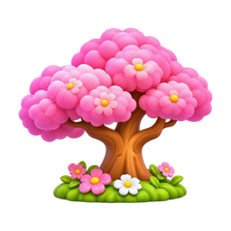
Pink cotton-candy blossom tree with warm branching trunk, tiny pale flowers in fluffy pink canopy, flowered grassy root patch, match pictured angle 2
blossom-trees/view-03
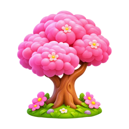
Pink cotton-candy blossom tree with warm branching trunk, tiny pale flowers in fluffy pink canopy, flowered grassy root patch, match pictured angle 3
blossom-trees/view-04
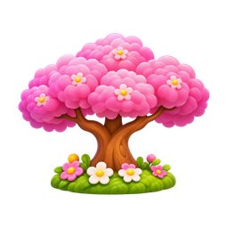
Pink cotton-candy blossom tree with warm branching trunk, tiny pale flowers in fluffy pink canopy, flowered grassy root patch, match pictured angle 4
blossom-trees/view-05
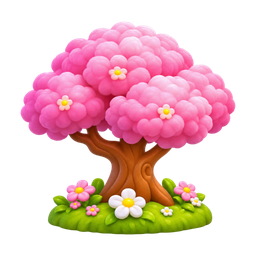
Pink cotton-candy blossom tree with warm branching trunk, tiny pale flowers in fluffy pink canopy, flowered grassy root patch, match pictured angle 5
blossom-trees/overhead
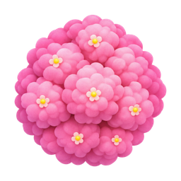
Overhead view of Pink cotton-candy blossom tree with warm branching trunk, tiny pale flowers in fluffy pink canopy, flowered grassy root patch
wisteria-trees/view-01
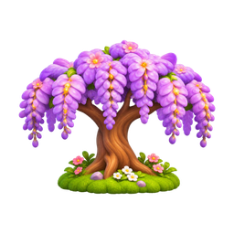
Purple wisteria tree with long hanging lavender blossom bunches, twisting warm brown trunk, green moss and flowered root patch, match pictured angle 1
wisteria-trees/view-02
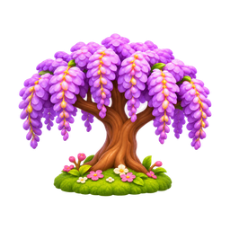
Purple wisteria tree with long hanging lavender blossom bunches, twisting warm brown trunk, green moss and flowered root patch, match pictured angle 2
wisteria-trees/view-03
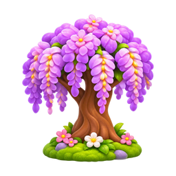
Purple wisteria tree with long hanging lavender blossom bunches, twisting warm brown trunk, green moss and flowered root patch, match pictured angle 3
wisteria-trees/view-04
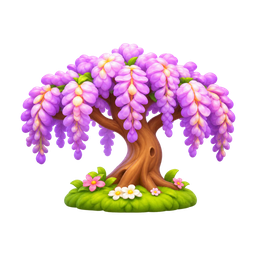
Purple wisteria tree with long hanging lavender blossom bunches, twisting warm brown trunk, green moss and flowered root patch, match pictured angle 4
wisteria-trees/view-05
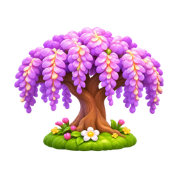
Purple wisteria tree with long hanging lavender blossom bunches, twisting warm brown trunk, green moss and flowered root patch, match pictured angle 5
wisteria-trees/overhead
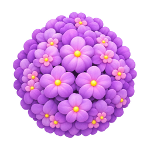
Overhead view of Purple wisteria tree with long hanging lavender blossom bunches, twisting warm brown trunk, green moss and flowered root patch
terrain/flower-grass-a
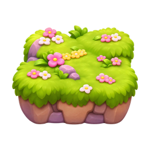
Chunky flower-covered green grass platform on lavender-brown rock, broad square shape
terrain/flower-grass-b
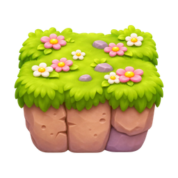
Square grassy rock platform with white and pink daisies and lush hanging turf
terrain/daisy-grass
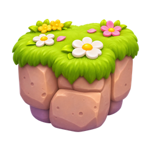
Rounded grass-topped rock platform with large white daisies, pale brown stone side
terrain/small-flower-grass
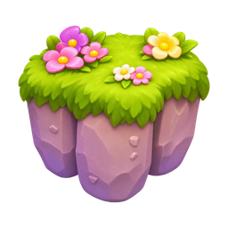
Small grass-topped purple rock block with pink and yellow flowers
terrain/wide-flower-grass
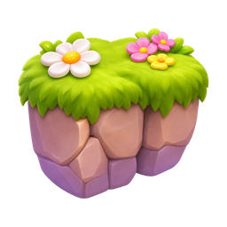
Wide grass-topped rock platform with white flowers and hanging turf
terrain/low-flower-grass
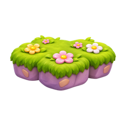
Low wide oval grass-topped purple rock platform with small flowers
honey-platforms/cluster-wide
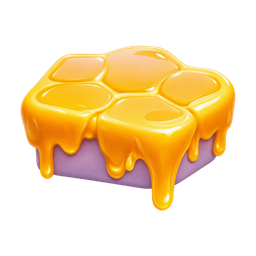
Broad cluster of glossy golden honey hexagon stepping platforms with long honey drips underneath
honey-platforms/cluster-small
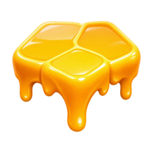
Small golden honey platform cluster with three rounded hexagonal cells and hanging drips
honey-platforms/large-hexagon
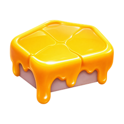
Single broad thick hexagonal golden honey platform with honey-dripping sides
honey-platforms/honeycomb-cluster
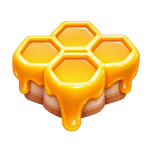
Cluster of five small honeycomb hexagon platforms with bright gold rims and drips
honey-platforms/single-hexagon
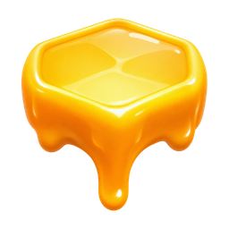
Single small gold hexagonal honey stepping stone with one long honey drip
terrain/large-flower-island
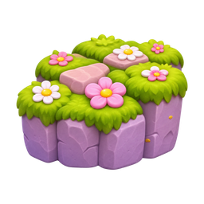
Large raised lavender rock meadow platform with green grass, pink stepping stones and scattered daisies and pink flowers
terrain/bare-round-stone
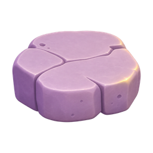
Round flat lavender rock stepping platform with cracks and no grass
terrain/moss-round-stone
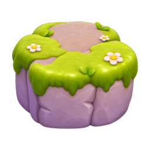
Round low stone platform with green moss cap and tiny daisies
terrain/small-moss-stone
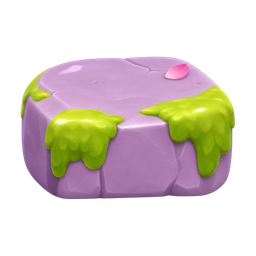
Small short moss-topped lavender stone block
terrain/bare-wide-stone
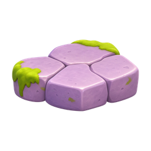
Wide low lavender stone platform with large irregular cracked flagstones
terrain/wide-moss-stone
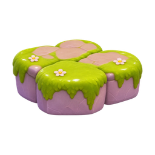
Wide mossy stone platform with green top and sparse daisies
terrain/large-moss-platform
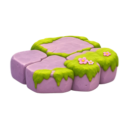
Large low lavender rock platform, cracked stone top mixed with moss and tiny flowers
water-tiles/pool-a
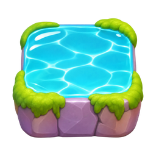
Square shallow turquoise water tile with white ripples, rock border and moss corners
water-tiles/pool-b
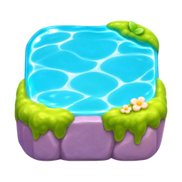
Second square turquoise water tile with white ripple shapes and subtle moss border
falls/water-tall
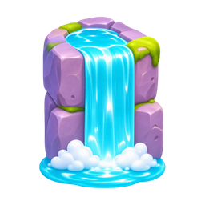
Tall turquoise waterfall pouring from round lavender rock pillar into white foam pool, moss on ledges
falls/water-wide
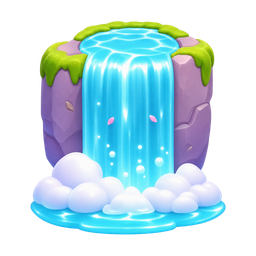
Broad turquoise waterfall on mossy lavender rock column with white foam and small pool
falls/honey-wide
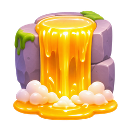
Golden honey waterfall dripping over broad round rock column, glossy honey pool and pale foam below
falls/honey-small
Small glossy golden honey waterfall over lavender rock pillar, honey puddle at base
bridges/wood-straight
Short straight wooden plank bridge with golden rope handrails and four posts
bridges/honey-arch
Arched wooden bridge with glossy honey-gold handrail and pink capped posts
bridges/honeycomb-arch
Arched golden honey bridge with central hexagonal honeycomb ornament and stout wooden posts
gates/flower-vine
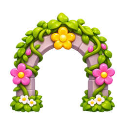
Garden arch of green vines and pale stone decorated with pink white flowers and yellow flower crest
gates/lantern-vine
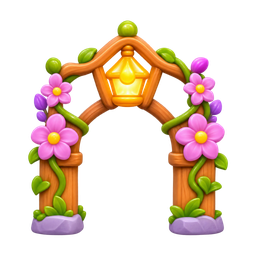
Vine and flower gateway with hanging honey-gold lantern at top, pink flowers on pale stone supports
gates/honey-arch
Golden honey stone arch with single hexagon crest, pink flower clusters at both feet
gates/honeycomb-arch
Golden honeycomb gateway made of raised hexagonal cells, round honey-gold bases
props/direction-sign
Warm wooden right-pointing arrow sign on post, pale arrow inset and tiny gold flower corner
props/honey-jar-large
Round amber honey jar with pink cloth lid, flower emblem and gold honey clasp
props/honey-jar-small
Small glossy honey jar with pink fabric lid and pale bow
props/honey-dipper
Angled wooden honey dipper with thick golden honey dripping into a small puddle
props/honeycomb-blocks
Stack of golden rectangular honeycomb blocks with hexagonal holes
props/hanging-hive
Golden tiered hanging beehive with dark entrance, suspended from horizontal rustic wooden branch by cord
props/banner-high
Coral pink hanging banner on golden wooden pole, yellow flower emblem, pointed lower edge
props/honey-stump
Hollow warm brown tree stump overflowing with glossy golden honey and honey puddle
rocks/flower-boulder-a
Low lavender boulder cluster with purple and pink daisies and green leaf bed
rocks/flower-boulder-b
Lavender boulder cluster with large pink flowers on top, small green leaves and moss
rocks/small-moss-a
Small moss-capped lavender garden boulder with tiny white daisy
rocks/small-moss-b
Small rounded mossy lavender rock cluster with tiny pink flower
props/banner-low
Coral pink flower-emblem banner on golden wooden stand, lower angle variant
shrubs/leafy
Compact round lush green leaf bush with a few small pale yellow flowers
shrubs/pink-blossom
Round low pink blossom shrub with pale yellow flower centers
shrubs/purple-blossom
Round low purple blossom shrub with pale yellow flower centers
shrubs/white-pink
Rounded green shrub with clusters of small white, pale pink and yellow flowers
shrubs/white-daisies
Green leafy shrub with small white daisies and yellow centers
shrubs/pink-yellow
Rounded green bush with mixed pink and yellow blossoms
grasses/tall-blades
Tall pointed bright green grass tuft with several broad tapered leaves
grasses/broad-blades
Broad green grass tuft with curved layered leaves
flowers/lavender-sprig
Upright purple lavender flower spikes with narrow green leaves at base
flowers/white-daisy
Single white daisy with yellow center, green stem and two leaves
flowers/pink-daisy
Single pink daisy with yellow center, green stem and leaves
flowers/golden-flower
Single golden yellow garden flower with green stem and broad leaves
flowers/pink-tulip
Closed pink tulip bloom on green stem with curved leaves
flowers/white-tulip
White tulip with golden base and green stem and leaves
flowers/coral-daisy
Bright coral-pink daisy with yellow center on leafy green stem
grasses/small-a
Small pointed green grass tuft with five blades
grasses/small-b
Tiny three-blade green grass tuft
grasses/small-c
Tiny narrow green grass tuft
grasses/small-d
Small broad-blade green grass tuft
petals/flower-bud
Tiny pink and yellow flower bud
petals/pink-small
Small isolated soft pink petal
petals/pink-folded
Folded glossy pink petal
petals/pink-curved
Curved pointed pink petal
petals/pink-flat
Flat soft pink blossom petal
petals/pink-rounded
Rounded soft pink petal
petals/pink-wide
Wide bent pink blossom petal
petals/purple
Single purple blossom petal
petals/pink-pale
Single pale pink blossom petal
petals/gold-petal-cluster
Small golden yellow flower petal cluster
backgrounds/sunset-gardens
Wide pastel sunset garden background, pink blossom trees along sides, golden pink sky and cloud sea, distant lavender mountains; no characters, no border
backgrounds/floating-gardens
Wide bright pastel sky background with distant floating flower cottage islands above pink lavender cloud sea and blue sky; no characters, no border
clouds/white-high
Large soft white cloud cluster with pale lavender undersides
clouds/lilac-high
Small lilac cloud cluster with rounded puffs
clouds/white-low
Wide low white cloud cluster, pale lilac underside
clouds/lilac-low
Wide lilac cloud cluster with tall central puffs
clouds/tiny-left
Tiny white lavender cloud puff
clouds/tiny-middle
Tiny low white cloud with lavender underside
clouds/tiny-right
Tiny low lilac cloud puff
sky/rainbow
Pastel rainbow arch, gold pink mint blue bands, soft white cloud at each foot
clouds/pink-small
Small soft pink-lavender cloud cluster
clouds/flower-cloud
Small lilac cloud with tiny pink flower and yellow center
particles/sparkle-tall
Slender warm golden four-point sparkle
particles/sparkle-small
Small four-point golden sparkle
particles/sparkle-low
Small softly glowing gold four-point sparkle
effects/petals-upper
Loose cluster of drifting pink flower petals, isolated transparent VFX
effects/petals-lower
Second cluster of curling floating pink flower petals, isolated transparent VFX
bees/three-quarter
Cute small round yellow bee, dark brown bands, smiling face, antennae and translucent pale blue wings; three-quarter flying view
bees/front
Cute round yellow bee, brown stripes, smiling face, antennae and translucent pale blue wings; front flying view
bees/side
Cute small yellow bee with brown stripes and pale blue wings; side flying view
effects/bee-trail
White dotted looping bee flight trail with tiny diamond glints, transparent overlay; no bee
collectibles/amber-crystal
Faceted amber honey-gold crystal cluster, glossy luminous golden facets
collectibles/honeycomb

Small cluster of glossy golden hexagonal honeycomb cells, open amber centers
bouquets/pink-large
Large pink flower bouquet with yellow centers, green leaves and small pale flowers
bouquets/mixed-small
Small ground cluster of white and pink daisies with yellow centers and green leaves
collectibles/honey-drop-small
Small glossy golden honey droplet
collectibles/honey-drop-tiny
Tiny glossy golden honey droplet
collectibles/honey-drop-large
Large glossy golden amber honey droplet
particles/sparkle-honey
Tiny golden glint accent near honey drops
bouquets/coral-small
Small pink and yellow flower bouquet with bright green leaves